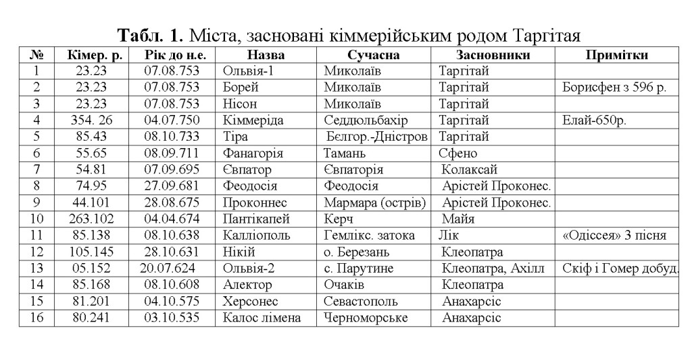
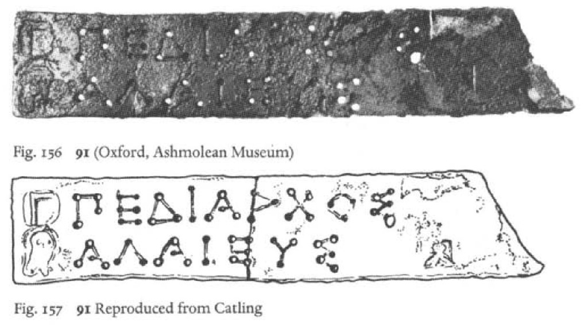
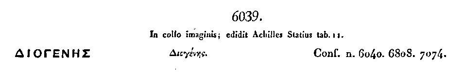
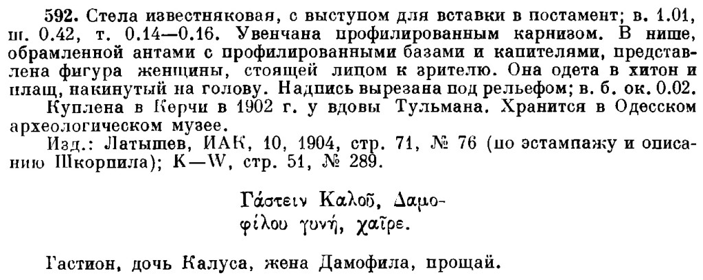
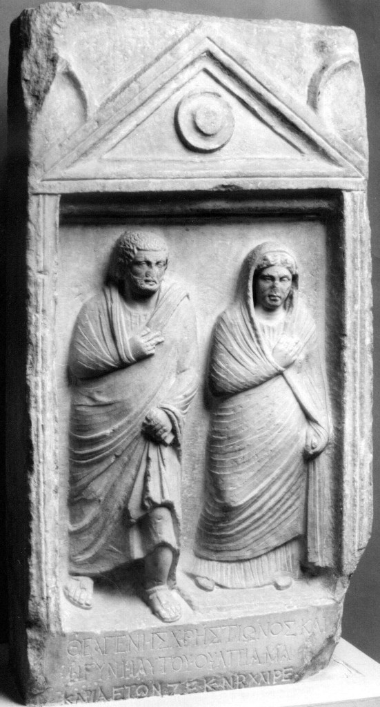

УДК 94(3) З 81
Золотухін А.І. Дослідник (Україна, Миколаїв), azolotukhin@ukr.net
Методами апокрифології знайдено і розшифровано 21 автограф Таргітая, 17 автографів його дружини Клеобуліни, дочки пророка Зороастра й фінікійської цариці Буси. На їх підставі доведено, що давньогрецька абетка зроблена ними й вони є засновниками давньогрецької писемності. У них народилася геніальна дочка Сфено, з 25 автографів якої видно, що саме вона в 7 р. розробила код утаємничення написів, який став основою апокрифології. Визначено, що Таргітаєм з нащадками збудовано 16 міст, 2 з них – в Елладі, 14 – в Північному Причорномор’ї. У Таргітая і Сфено народився Арпоксай, засновник античності й християнства. Знайдено 110 автографів Арпоксая-Арістея Проконнеського, один з яких має унікальний горельєфний портрет Таргітая й Сфено!
Ключові слова: Таргітай, Клеобуліна, Зороастр, Сфено, Арістей, Еллада.
Хоча Таргітай є засновником Античності, Християнства та скіфської держави, сучасній науці практично нічого про нього невідомо. Ось, що пише Вікіпедія: «Таргітай (грец. Ταργιτάος) – у скіфській міфології першолюдина, пращур скіфів-сколотів, син Папая та дочки ріки Борисфен, батько Ліпоксая, Арпоксая та Колаксая. За інтерпретаціями Геродота та, ймовірно, традицією припонтійських іонійців Таргітаю відповідає Геракл еллінів.» На тлі цитати назва цієї статті звучить парадоксально, чи не правда? – як таке може бути, щоб кіммерійський цар був засновником давньогрецької культури?! Не дарма ж переважна більшість науковців вважає апокрифологію божевіллям. Але це, як на мене, є лише оцінкою глибини цієї парадоксальності, якій виповнилося від дня народження на нашій землі Таргітая 2797 років!
Треба підкреслити, що сьогодні науковці відносяться до апокрифології, так само як ті греки, що вважали божевільним Арістея Проконнеського, коли він 8 жовтня 703 р. до н.е. в Афінах, будучи членом Ради 9 Еллади, заявив, що кіммерійці керували греками в Атлантиді [3a], – варвари й нами керували?! От ця парадоксальність й була причиною створення міфів кіммерійськими творцями тому, що ні у них, ні у скіфів не було ще власної держави й писемності, через те їм доводилося це робити для греків, які були для них спорідненим народом ще з часів Атлантиди. Найглибшою прихованістю цієї міфологізації виявилося прийняття кіммерійськими творцями сприйнятних для греків псевдонімів, які дозволяли їм друкувати в Афінах свої твори. І першим почав це робити Таргітай, ось які з них поки що вдалося виявити: Лісімах, Фарнак, Лісій, Ісігон, Діодот, Навменій, Архелай, Теодор. У його сина Арпоксая вже було 32 псевдоніми, у Гомера – 51, в Анахарсіса – 53. В середньому на кожного з поки що встановлених 26 активних авторів приходилося по 12 псевдонімів. Це свідчить, по-перше, про те, що реальних творців було на порядок менше, а по-друге, є побічним доказом того, що ця творчість була зосереджена в кіммерійському роду Таргітая. Проте, це явище на 3 тисячі років закарбувало відому тезу, що виключно греки є творцями античності й християнства, а не кіммерійці з роду Таргітая. [1]
Як з’ясовано завдяки апокрифології, міфологічний образ кіммерійського царя Таргітая (16.07.776-8.10.696 рр. до н.е.) створили не греки, а його нащадки, починаючи з його геніальнішого сина Арістея Проконнеського (Арпоксая). В 92 р. він передав 20 зошитів 15 р. Гомерові, той – сину Анахарсісу, а він на при кінці свого 107 р. життя приєднав до цього дочку Клеобуліну-2, а та – молодшого брата Никона. Завершив 287 р. епопею створення «Історії» Геродота, син Никона, Аполлонід Нікійський, на о. Березань у місті Нікії в 55 д. 349 р. кіммерійської хронології, а в сучасній – 8 вересня 427 р. до н.е. [1]
Кіммерійську хронологію розробили дочка Таргітая й Клеобуліни, Сфено, з її сином від Таргітая, Арпоксаєм (Арістеєм Проконнеським), а доопрацював її на високосні роки Арістей за участі Гомера й Клеопатри в 61 д. 132 р. Вона майже не відрізняється від сучасної. Новий рік в ній починався з дня народження Таргітая, тобто 1 д. 1 р. хронології відповідає 16 липню 776 р. до н.е. У високосні роки додавався один день в лютому й вони мали 366 д. Інші дні й роки відраховувалися арифметично від початку зі знаком (+) після, а до – з (-) до народження Таргітая. Тобто вона грає для архаїчних часів європейської історії таку ж саму роль як Різдво Христове для сучасної хронології. Через те що її не сприйняв «любитель календарів» Солон, офіційно вона не була втілена в Греції, а була робочою для прихованих написів творців античності та християнства. [1]
Відсутність визнання кіммерійської хронології разом з міфологізацією (псевдонімами) призвело до повного руйнування справжньої Давньогрецької історії й культури тому, що лише кіммерійська хронологія має опорні дати, які корелюють з такими астрономічними явищами, як сонячне затемнення та поява комети Галлея. У тексти, сприйнятні для греків, цю дату народження Таргітая Анахарсіс втілив у вигляді дати проведення грецьких Олімпіад, коли вперше начебто були зафіксовані прізвища переможців [1, c. 225]. Але цей вимушений обман лише частково виправив ситуацію. А насправді перша Олімпіада була проведена Клеопатрою з Ахіллом в нашому краї на Тендрівській косі лише 16 липня 628 р. до н.е., Греція перейняла цій досвід ще пізніше.
Але кіммерійська хронологія збереглася й стала опорою розшифровки прихованих текстів писемних творів та лапідарних написів. Якби Кирило Туровський не дав в 1187 р. в алегоричній формі розшифровки коду шифрування в «Слові о полку Ігоревім» [2], то ми б і досі нічого про це не знали тому, що тим, хто ним користувався, не було ніякого сенсу код розкривати при житті! А цей код розробила 6 р. дочка Таргітая й Клеобуліни (дочка Зороастра!), Сфено (16.05.749-8.10.696). Завдяки цьому коду розшифровки й кіммерійській хронології вдалося прочитати близько 3000 лапідарних написів на твердих носіях, тобто це автографи (!), і в кожному з них встановлені автор, дата створення та присвята напису! Приреченість на успіх апокрифології полягає в тому, що вона спирається виключно на першоджерела, ніяких перекладів, ніякої компіляції! І хай не дивують точні дати, притаманні такої далекої давнини – на усе є воля Божа й тому це зовсім не моя заслуга. Мої промахи та помилки науковці виправлять з часом, а от те, що за однією методою вдалося розсортувати майже 3000 написів по авторах і датах – це в науці є об’єктивним доказом!
В цих артефактах вдалося знайти свідчення про батьків Таргітая, кіммерійського царя Гастія (8.10.810-8.10.776) та єгипетську царицю Філаінію (25.8.800 – 8.10.715), які жили в Каппадокії (Туреччина). Батько був що найменше праправнуком тих царів-моряків, що на початку IX ст. до н.е. покинули Алібант, пішли завойовувати Передню й Малу Азію, а коли через 30 р. повернулися на батьківщину їх не пустили до дому діти й дружини, які на той час вже жили з кавказькими скіфами (алани, осетини тощо), що спустилися до них з гір. Кіммерійці були лицарями й не стали битися з синами, а на ознаку вигнання з батьківщини збрили волосся до чуба (оселедців) й повернулися до Малої Азії. Філаінія походила з Ксоїду, міста у Себеннітському номі Нижнього Єгипту, що знаходилося на одному з островів Нільської дельти. Моряк Гастій, пам’ятаючи своє атлантичне походження, прибув сюди з Каппадокії до Алібанту з вагітною Філаінією, 8 р. донькою Фабеїдою, 6 р. Гереєм і 4 р. Тарсусом. В день прибуття до Алібанту тут народився Таргітай, а батько загинув в Галії через 85 днів.
У 14 р. Таргітая, як воїна, аборигени, що мешкали біля Алібанту, обирають тираном 3-х селищ, в 15 р. моряк вже торгує зерном з Грецією, а в 18 р. його обирають до складу Пританії в Афінах від філи Гілеї («Лесистої»).
Знавець багатьох мов, любитель поезій, Таргітай, знайомиться з родиною фінікійських царів Агенора і його сина Кадма, разом з яким починає розробляти грецьку абетку на основі фінікійської. Дочка Кадма, Буса, була дружиною Зороастра і Таргітай закохується в їхню доньку Клеобуліну (21.08.774-8.10.694). У 20 р. пливе до Фінікії, звідси на верблюдах добирається до передмістя Іс Вавилону, де жив в той час Зороастр (8.10.794-8.10.714). Таргітай вистоює тижневу чергу царів до Пророка, розкриває йому таємницю Атлантиди й отримує згоду на одруження з «виноградною ягідкою». Повертається до Фінікії й на кораблі у 20 р. привозить 18 р. Клеобуліну до Алібанту й починає будівництво 3-х міст на базі існуючих селищ. Ця історія описана Гомером на Розетському камені та в прихованих текстах Євангелій Гавриїлом-Лукою [3b; 1, с. 332].
Таргітай і його нащадки збудували 16 міст (Табл. 1), в які кіммерійці, за давньою традицією Атлантиди, запрошували греків, а ті – їх до складу Пританії в Афінах. Тут не було класичної грецької колонізації та рабства, за винятком випадків в Аїді, коли владу захоплювали не моряки, тирани Пан і Савлій, тоді зв’язків з Грецією не було лише у 3 містах! Керували містами нащадки Таргітая демократично. Це заклало основи Скіфської держави, бо держава це міста.
З написів в автографах витікає, що Таргітай разом з Кадмом одночасно почали розробляти грецьку абетку на основі фінікійської, ймовірно, на його замовлення. Але з часом варіант абетки саме Таргітая виявився кращим за варіант Кадма. У цьому виборі зіграло важливу роль широке практичне використання її саме в Аїді Таргітая, тим більше, що далі він відпрацьовував її разом з Клеобуліною. Про це свідчать автографи Клеобуліни, яка була дуже обдарованою. Ось подивиться на самий ранішній автограф Клеобуліни-1 з усієї колекції написів (Рис. 1). [5, №91] Зверніть увагу на те, що це є найдавніший напис в історії Європи, зроблений невдовзі та внаслідок розробки грецької абетки! 
{kind=link}
{kind=link}
Рис. 1. Фото напису на бронзовій пластині, з музею в Оксфорді, придбана у 1967 р.
Напис: Γ Πεδίαρχος Ἁλαιεύς
Акротелевірш: Γ Πεδίαρ-χ-ος Ἁλαιεύς
(-αρχος) Заклав (ἉΓ) 3 міста (-εδί=δίδομι) після одруження на честь (-δία-) батька нар. в (ἉΓ) 85 д. за (Πε) 34 р. до сина, (αρ) загиблого в цей же (εδ) 85 день (δί) 20 р. тому на (Πεδί) рівнині у (Ἁλαιεύς) Галів і в (ία) 23 д. (αρ) 23 р. (-εδία=δέμω) збудував їх (ρἉ) 23 р. (αρχος) засн. держави нар. в (Ἁλ) 1 д. (λα) 1 р. – (αι) 20 р. нар. в (ιε) 37 д. (εύ) 2 р. в (ύς) 23 д. (ος) 23 р.
Апокрифологічний переклад напису: Заклав 3 міста після одруження на честь батька Гастія, загиблого в 85 д. 20 р. тому на рівнині у Галів, і у 23 д. 23 р. збудував їх 23 р. засновник держави Таргітай – 20 р. Клеобуліна-1 у 23 д. 23 р.
Коментар: надзвичайно важливий напис 20 р. Клеобуліни-1, в якому вона повідомляє про загибель Гастія у галлів, а не в морі, проти інших свідчень, а також про завершення будівництва Таргітаєм перших трьох міст на нашій землі (Табл. 1). Це поки що найстародавніший за датою (7 серпня 753 р. до н.е.) напис серед майже 3 тис. колекції лапідарних написів, що дійшли до нас.
Слід зауважити, що Сфено почала дуже рано читати книжки, полюбляла різні загадки, таємниці, шаради й жила усамітнено. Батько моряк намагався щоразу привозити їй книжки, в 6 р. вона вже не тільки прочитала «П’яти-книжжя» Мойсея, а знайшла в ньому приховані вірші та розробила власну систему складання таких акромезотелевіршів, які заклали основу створення прихованих текстів у звичайних. Причому найціннішим в цій системі шифрування тексту є привласнення буквам цифр, що дозволило значно стиснути питомий обсяг інформації, який приходився на одну букву. Неперевершеними майстрами цього мистецтва були Сфено й прорицатель Мопс та інші, їм вдавалося в 6-8-ми буквах сховати до 20 слів! Завдяки цьому 10% написів (!) з усієї колекції мають лише 1-2 слова, в яких вказаний автор, дата й присвята. Ось приклад одного з автографів Таргітая, знайденого в Італії, публікація 1853 р. [6]
{kind=link}
Рис. 2. Фото напису з першоджерела [6]
Напис: Διογένης
Акротелевірш: Διο–γέ- νης
(νΔ) 90 р. тому загинув Діоген нар. в (νΔ) 85 д. за (ιο) 34 р. до мене – нар. в (ον) 1 д. (νη) 1 р. в (ης) 85 д. (γέ) 56 р.
Апокрифологічний переклад напису: 90 років тому загинув Діоген-Гастій, народжений в 85 день за 34 роки до мене, – Таргітай в 85 день 56 року.
Коментар: напис Таргітая, знайдений в Італії, присвячений 90 р. з дня загибелі батька Гастія-Діогена, який створений 8 жовтня 720 р. до н.е. Тут в одному слові закодовано 21 слово!
Цим фактично була закладена основа сучасної апокрифології. Найпростішою формою з цих віршів були акротелевірші, яки були схожі на кошик. Наведений вище приклад першого автографа Клеобуліни ще не мав такого оформлення (мною вони надані тут для зручності читання прихованого тексту), а на Рис. 3. приведений перший кошик (акротелевірш) є зразковим. [7] Саме Сфено навчила мистецтву втаємничення текстів Таргітая, Клеобуліну, свого сина від Таргітая, Арістея Проконнеського, братів по батькові Ліпоксая й Мопса.
{kind=link}
Рис. 3. Фото напису й перекладу на вапняковій стелі, що куплена в Керчі у 1902 р.
Акротелевірш напису на Рис. 3: Γάστειν Καλοΰ, Δ-α-μο– φίλου γυνὴ, χαῖρε.
(φΓ) 35 р. тому в (φΓ) 35 р. помер череватий (Γάστειν) Гастій нар. в (άσ) 85 д. за (τε) 34 р. до красеня (Καλοΰ) Калуса нар. в (ιν) 1 д. (Κα) 1 р., чоловік дружини (λο) 58 р. (Δαμοφίλου) любиміці народу нар. в (ΰΔ) 41 д. за (φί) 24 р. до Калуса, якому в (λο) 1 д. виповнилося (υγ) 35 р. – (υν) 7 р. нар. в (ὴχ) 305 д. (αῖ) 27 р. в (ρε) 1 д. (μο) 35 р.
Апокрифологічний переклад напису: 35 р. тому в 35 р. помер череватий Гастій нар. в 85 д. за 34 р. до красеня Таргітая, чоловік дружини 58 р. улюблениці народу Філаінії, нар. в 41 д. за 24 р. до Таргітая, якому в 1 д. 35 р. виповнилося 35 р. – 7 р. Сфено в 85 д. 35 р.
Коментар: це поки що найбільш ранній (8 жовтня 741 р. до н.е.) з усіх досліджених тут автографів 7 р. Сфено який, з одного боку свідчить про не аби які її здібності, а з іншого боку містить в собі дитячі епітети оцінки якості батьків.
Для приклада приведу найкращий автограф Таргітая [8] (Рис. 4).
{kind=link}
Рис 4. Камінний постамент з бронзовою скульптуркою Сілена з Бактрії, знайдений в 1978 р.
Напис: Εὑχὴν ἀνέθηκεν Ατροσωκης Ὄξωι.
Переклад напису: «За обітницею Атроск присвятив Оксу».
Акротелевірш: Εὑ-χ-ὴν ἀνέθη-κ-εν Ατροσ-ω-ης Ὄξωι
В (ὌΑἀ) 85 д. (ὌΑἀ) 61 р. (Εὑχὴ-) молюся про (ἀνέθηκεν) померлу в (ΑἀΕ) 85 р., нар. в (ΑἀΕ) 41 д. за (ὑἀ) 24 р. до мене, нар. нею в (ἀν) 1 д. (νέ) 1 р., мати (-σω-) мою з (-ξωι) ий переклад напису:
Апокрифологічний переклад напису: У 85 д. 61 р. молюся про померлу в 85 р., Філаінію, мати мою з Ксоїду (Єгипет) і батька безстрашного мого, Гастія, який загинув в 35 р. в 85 д. 1 р., 60 р. тому, – Таргітай в 85 д. 61 р.
Коментар: напис Таргітая – це молитва Таргітая присвячена батькам, через те автор-Сілен тут грає на двоствольній флейті. Напис конкретно присвячений смерті матері, єгипетської цариці Філаінії з Ксоїду, міста у Себеннітському номі Нижнього Єгипту. Батько Таргітая, кіммерійський цар і моряк Гастій, прибув сюди з Каппадокії (Туреччина) до померлого міста атлантів Алібанту (м. Миколаїв) з вагітною Філаінією, й трьома дітьми. В день прибуття на батьківщину їх роду атлантів тут народився Таргітай, засновник роду творців античності та християнства. Батько загинув через 85 д. в Галії.
Таргітай закохався у свою дочку Сфено і назвав на її честь в 12 р. місто, розташоване біля Алібанту, де вона народилася, Ольвією (Табл. 1). Борей знаходився на місці Адмиралтейства, Нісон в Широкій балці. Спочатку Сфено народила двійню синів Таргітаю, а через рік, у 211 д. 42 р., народився Арпоксай, засновник античності й християнства. 4 жовтня 728 р. до н.е. Таргітай і Сфено відкрили школи для дітей в 3-х містах Аїду (Табл. 1), де діти (з 8 до 12 років) займалися до квітня. В 5 р. син писав вже вірші кращі за батьківських і Сфено ховала їх від Таргітая. В 17 р. Арпоксай як моряк торгував зі Сфено й Таргітаєм зерном. На 34 р. Сфено в Ольвії-1 в 305 д. 61 р. прорицатель Мопс напророчив загибель Таргітая й Сфено в 85 д. (день загибелі Атлантиди!) за кордоном від молодика. З переляку Таргітай вигнав синів: Колаксая будувати Кіммеріду, Ліпоксая – Тіру, а у 20 д. 62 р. вигнав Арпоксая й він поплив до Мілету.
В Елладі він створив першу «Поему про коштовні каміння» і у 23 р. у 211 д. 65 р. отримав за неї Пальмову гілку, продовжував торгувати зерном. В 54 д. 68 р., під час сватання царем Боспору Фракійського Аспорухом до римлянки Клавдії, 25 р. Арпоксай винайшов пергамент. Почав його виробляти в Гілеї й торгувати ним, а на ознаку вигнання з батьківщини зрізав волосся до оселедця. У 27 р. у 29 д. 70 р. не еліна Арпоксая було обрано до Ради 9-ти Еллади. В 35 р. у 20 д. 78 р. (4 серпня 698 р. до н.е.) Арпоксай видав в Афінах на пергаменті першій в історії Європи епос «Арімаспейя» на 400 стор. в 3-х книгах, яку присвятив Таргітаю й Сфено, а після цього став Арістеєм – тобто знаменитим! [1]
Гомер в 12 р., під час вигнання його родини з Аїду Паном вперше ознайомився з «Арімаспейєю» в Проконнесі (Табл. 1), якій таємно побудував Арістей на о. Мармора за власні гроші, знайшов епос оригінальним, в ньому він писав про торгівлю батьків в Аїді зерном з Грецією, порадів він також опису в ньому Атлантиди. А через те, що Арістей назвав Таргітая в цьому епосі Гомером, прийняв рішення змінити батьківське ім’я Зет, на ім’я Гомера, як епонім кіммерійського племені, яке керувало Атлантидою. Це рішення підтримали Арістей та Клеопатра, яка вперше привела сама в 17 р., як керманич, корабель з Аїду (Миколаїв) до Елаю (Седдюльбахір), щоб відсвяткувати разом 13 р. Гомера. [1]
У 211 д. 75 р., через 13 р. після вигнання, вперше Арістей побував в Аїді, коли пристрасті батька вщухли, й радів зустрічі з матір’ю. Вдруге він приїхав у 211 д. 79 р. з Клавдією та з 1 р. сином Автоліком до батьків в Ольвію-1, привезли багато подарунків з епосом «Арімаспейя», який був їм присвячений. А в 305 д. 79 р. вони відмічали 52 р. Сфено, на яке завітав могутній 26 р. лідійський цар Гіг, який засватав там Сфено і запросив їх до себе в Трою. З Аїду Арістей з дружиною повернулися до Мілету у 20 д. 80 р. А в 85 д. 80 р. Таргітай зі Сфено прибули до Трої на своєму кораблі там зустрілися з Гігом, а перед самим від’їздом Таргітай посварився з Гігом і 26 р. лідійський цар вбив списом в 85 д. 80 р. Таргітая, в точності з передбаченням Мопса. Сфено, побачивши це, кинулася з гори вниз і розбилася. Арістей з Клавдією прибули до Трої, зібрали останки батьків та поховали їх в Кіммеріді-Елаї. Коли Гомер був у вигнанні, то він з Арістеєм у 85 д. 133 р. шукали місто поховання та не знайшли його. [1]
На щастя Господь Бог зберіг для людства видатний твір роботи 65 р. Арістея Проконнеського, з горельєфними портретами Таргітая і Сфено [4] (Рис. 5).
{kind=link}
Рис. 5. Стела мармурова, знайдена в Херсонесі в 1793 р.
Напис: Θεαγένης Χρηστίωνος • καὶ
ἡ γυνὴ αὐτοῦ • Οὐλπία Μα-
καρία ἐτῶν ξε´ κὲ νβ´· χαῖρε.
Переклад: Феаген, (син) Хрестіона, і його дружина Ульпія Макарія 65 и 52 років. Вітаю.
Акротелевірш: Θεαγένης Χρηστίωνος -κ-αὶ
ἡ γυνὴ αὐτοῦ Οὐλπί-α- Μα–
καρία ἐτῶν ξε´ κὲ νβ´· χαῖρε.
До (Θἡκ) 80 р. (Μακαρία) щасливої Макарії нар. в (Θἡκ) 305 д. (Θἡκ) 27 р., дочки (εα) 25 р. (Χρηστίωνος) золотої нар. в (γέ) 37 д. (νη) 2 р., дочки (Θεαγένης) народженого богами в (ςΧ) 85 д. за (ρη) 18 р. до нар. в (στ) 1 д. (ίω) 1 р., та нар. в (νο) 30 д. за (ςἡ) 17 р. до нар. в (γυ) 1 д. (νὴ) 1 р. Дружина (Οὐλ) кучерявого Ульпія нар. в (αὐ) 1 д. (το) 1 р., загинула в (ῦΟ) 52 р. в (ὐλ) 85 д. (πί) 80 р. через ситуацію, яку утворив сам Ульпій з (κα) 26 р. нар. в (ρί) 138 д. (αἐ) 53 р. Син нар. в (τῶ) 211 д. (νξ) 42 р. Ульпія та Макарії після загибелі їх у (ε´κ) 85 д (ὲν) 80 р.–(β´χ) 65 р. нар. в (αῖ) 211 д. (ρε) 42 р. в (Μα) 305 д. (αὶ) 107р.
Апокрифологічний переклад напису: До 80 р. щасливої Сфено, дочки 25 р. золотої Клеобуліни-1, дочки, народженого богами Зороастра, та (фінікійської царици) Буси. Дружина кучерявого Таргітая загинула в 85 д. 80 р. через ситуацію, яку утворив він сам з 26 р. (царем Лідії) Гігом. Син Арістей Таргітая й Сфено після загибелі їх у 85 д. 80 р. – 65 р. Арістей в 305 д.107 р.
Коментар: у 65 р. Арістей 16 травня 669 р. до н.е. створив цей найкращий скульптурний портрет своїх батьків Таргітая й Сфено та присвятив його 80 р. матері. Він розмістив їх під тимпаном, це рішення після нього стало класичним для оформлення багатьох пам’ятників нащадків Таргітая. Зображення не є статичним, а символізує ходу батьків, засновників античної культури, у майбутнє. Як це видно з напису, Арістей виправдовує свого покровителя Гіга у конфлікті, який стався між Таргітаєм та Гігом біля Трої, під час їх повернення до Аїда. Обидва царі були вибуховими, при прощанні Таргітай щось не те сказав Гігу, а той вразив його списом з отрутою морського ската. Сфено, побачивши загибель батька, кинулася з гори. Радше за все, Таргітай не схотів віддавати йому свою улюбленицю.
P.S. 1. 8 жовтня 596 р. до н.е. до 100 р. з дня загибелі Таргітая й Сфено, Клеопатра перейменувала місто Борей, назване так на честь Таргітая, в Борисфен, щоб поєднати імена Таргітая й Сфено в одній назві, тоді Інгул й Дніпро отримали свою першу історичну назву – Борисфен – замість міфічного Океану.
- 28 жовтня 592 р. до н.е. цариця Клеопатра, за рік до смерті, перейменувала кіммерійців в царських скіфів, Гілею в Скіфію, свого і Гомера сина Гіла, – в Скіфа. Так що, цю дату можна вважати датою заснування Скіфії як держави!
Список використаних джерел:
- Золотухін А.І. «Україна – душа і серце Європи», Миколаїв, 2018, 444 с.
- Золотухін А.І. «Таємниці «Слова о полку Ігоревім» (Довідник прихованих текстів першоджерел Київської Русі. Т.1)», 2018, 432 с.
- Золотухін А.І. на сайті «Гомер і Атлантида»: a). «Атлантида – перша корабельна держава Європи»; b). «Розетський камінь як автограф Гомера»; IOSPE: http://iospe.kcl.ac.uk/index-ru.html – Електронна публікація 3-го видан-ня Корпусів древніх написів Північного Причорномор’я – Inscriptiones antiquae Orae Septentrionalis Ponti Euxini graecae et latinae: III – Херсонес і хора (№ 362).
- John H. Kroll, Athenian Bronze Allotment Plates (Cambridge, MA, 1972)
- 6. «Corpus Inscriptionum Graecarum», III, 1853 (№ 6039)
- Корпус Боспорских надписей, «НАУКА», М.-Л., 1965 (№592)
- Литвинский Б.А., Виноградов Ю.Г., Пичикян И.Р. Вотив Атроска из храма Окса в Северной Бактрии. ВДИ, №4, 1985, с. 84-110.
Zolotukhin A.I. A researcher (Ukraine, Mykolaiv), azolotukhin@ukr.net
Cimmerian king Targitay – the founder ancient Greek culture and the Scythian state!
By the methods of apocryphology, 21 autographs of Targitay, 17 autographs of his wife Cleobulina, daughter of the prophet Zoroaster and the Phoenician queen Busa were found and deciphered. Based on them, it is proved that the ancient Greek alphabet was made by them and they are the founders of ancient Greek writing. They had a genius daughter, Spheno, whose 25 autographs show that it was she who in 7 developed the code of secrecy of inscriptions, which became the basis of apocryphology. It was discovered that 16 cities were built by Targitay and their descendants, two of them in Greece and 14 in the Northern Black Sea coast. Arpoxay, the founder of Antiquity and Christianity, was born in Targitay and Spheno. 110 autographs of Arpoxay-Aristeus Prokonnesky were found, one of which has a unique high-relief portrait of Targitay and Spheno!
Key words: Targitay, Cleobulina, Zoroaster, Spheno, Aristeas, Hellas.
{kind=link}
{kind=link}
{kind=link}
{kind=link}